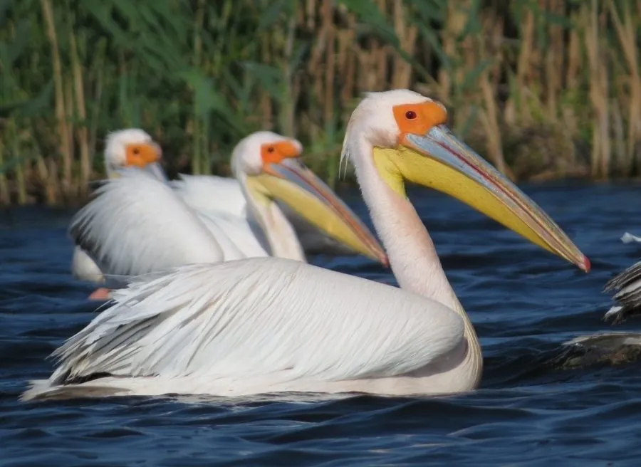

鸟类 · 动物界
白鹈鹕 Pelecanus onocrotalus

体形硕大、喙下挂着巨大喉囊的白色水鸟，能群体围捕鱼群，一次可吞下数千克鱼，飞行时列队翱翔。
- 分类
- 门脊索动物门纲鸟纲目鹈形目科鹈鹕科属鹈鹕属
- 栖息环境
- 大型湖泊、河口、沼泽与海岸浅水区，繁殖期在芦苇丛生的湿地集群营巢
- 地理分布
- 东南欧、非洲、中亚和南亚，中国新疆等地有分布记录，多为罕见旅鸟
- 保护级别
- IUCN 无危（LC）；中国国家二级保护动物
物种志
白鹈鹕体长 140–175 cm，翼展 245–295 cm，体重 5–15 kg，是体形最大的飞禽之一。全身羽毛白色，繁殖期胸部和颈部会染上淡淡的粉红色；喙长而扁平，呈黄粉色，喙下挂着一个能伸缩的巨大喉囊，眼周裸露的皮肤呈粉红色。它的翅膀宽大，飞行时常排成整齐的斜线或“V”字形队列。
白鹈鹕分布于东南欧、非洲、中亚和南亚，中国新疆等地有分布记录，多为罕见旅鸟。它们生活在大型湖泊、河口、沼泽和海岸浅水区，以鱼类为主食，也吃虾、两栖类和小型水鸟。捕鱼时，白鹈鹕会排成半圆阵形把鱼群赶向浅水，再同时收网般用喉囊兜住猎物。繁殖期在芦苇丛生的湿地上集群营巢，每窝产卵 1–3 枚，孵化 29–36 天。由于湿地开发和人为干扰，白鹈鹕在中国属于国家二级保护动物。
形态与习性
- 食性鱼类为主，也吃虾、两栖类和小型水鸟
- 体长140–175 cm
- 翼展245–295 cm
- 体重5–15 kg，雄鸟更大
- 喉囊喉囊可容纳 10 升以上的水
- 繁殖集群营巢，每窝 1–3 枚卵，孵化 29–36 天
- 寿命野外约 20–30 年
趣味知识
- 白鹈鹕的喉囊能装下 10 升以上的水，但真正吞下的鱼只有几千克。
- 它们会排成半圆阵形把鱼群赶向浅水，然后同时收网般捕食。
- 鹈鹕飞行时会把头缩在背上、长喙贴着脖子，姿态十分从容。
- 喉囊皮肤血管丰富，能帮助散热，也是求偶时展示的部位。